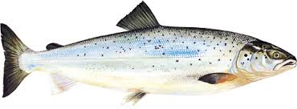

kapitel 1
det är rolit att fiska

lax är ätte gåt
det finns olika sorters fiskesätt tiliksempel mete.
de andra fiskeseten är flug fiske, kastspö.
Det fins olika sorters drag. tiliksempel båblers och spinare, seddrag.
kapitel 2
fiske tips
När man metar. Inan man böriar seta i hop utrusningen ska man
maska då tar man en bit bröd och smula sönder brödet.
jag heter Linus och jag va 9 år när jag gorde den här.
jag gilar att fiska.
jag gorde den 2014